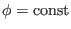
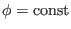

Next: Finding magnetic surfaces Up: Notes on tokamak equilibrium Previous: Radial coordinate
Given an axisymmetric tokamak equilibrium in
 coordinates (e.g.,
2D data
coordinates (e.g.,
2D data
 on a rectangular grids
on a rectangular grids  in G-file), we can
construct a magnetic surface coordinates
in G-file), we can
construct a magnetic surface coordinates
 by the
following two steps. (1) Find out a series of magnetic surfaces on
by the
following two steps. (1) Find out a series of magnetic surfaces on  plane and select radial coordinates for each magnetic surface (e.g. the
poloidal flux within each magnetic surface). (2) Specify the Jacobian or some
property you want the poloidal angle to have. Then calculate the poloidal
angle of each point on each flux surface (on the
 plane)
by using Eq. (188) (if the Jacobian is specified) or some method
specified by you to achieve some property you prefer for the poloidal angle
(if you do not specify a Jacobian). Then we obtain the magnetic surface
coordinates system
plane and select radial coordinates for each magnetic surface (e.g. the
poloidal flux within each magnetic surface). (2) Specify the Jacobian or some
property you want the poloidal angle to have. Then calculate the poloidal
angle of each point on each flux surface (on the
 plane)
by using Eq. (188) (if the Jacobian is specified) or some method
specified by you to achieve some property you prefer for the poloidal angle
(if you do not specify a Jacobian). Then we obtain the magnetic surface
coordinates system
 .
.